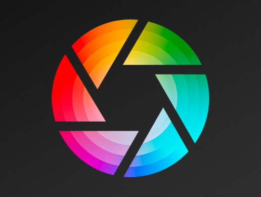
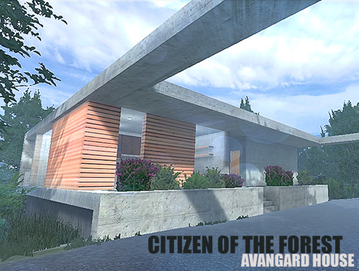

Hey there!
This is the report of
Virtual Interior Environment Project by Arthur Zhang

Instructor: Dr. Kelvin Lee
Made with Unity 2018
- Introduction -
A Lil' Bit of Brief
This project is an experimental interior design for a joint of two rooms in a well-developed exterior model as made with Unity.
With most models are picked from asset collections (cited in Credits section), I have experimented with textures, mapping and various sources of lights.
To embody a realistic graphic style, advanced assets such as Aura Volumetric Lighting and Post Processing were applied.


Inspiration and Designs
The fundamental of my project, a well-rounded exterior design Citizen Of The Forest - Avangard House by Sevastian Marevoy has offered an excellent skull for a clean-cut modern design to be actualized.
Inspired by classic mid-century modern style, I have chosen furnitures and decors with a clean, modern approach. At the same time, to give this concrete based house more coziness, BoHo styled items are added to soften the overall charisma.
- Demo -
- Development -
- Credits -
Made by: Arthur Junyi Zhang
Exterior Fundamental: Citizen Of The Forest - by Sevastian Marevoy
Aura - Volumetric Lighting by Raphael Ernaelsten
Free Rug Pack by Azerilo
Pictures by MAKSIM BUGRIMOV
Realistic Furniture And Interior Props Pack by Sevastian Marevoy
Big Furniture Pack by Vertex Studio
Special Thanks to Instructor: Dr. Kelvin Lee
Standard Assets & Post Processing Stack by Unity Technologies
Lamps by Unity Technologies
3dizart Books Pack by
Plants Pack by Keilbaum / Nobiax & Yughues
Tableware For Your Kitchen by Sevastian Marevoy